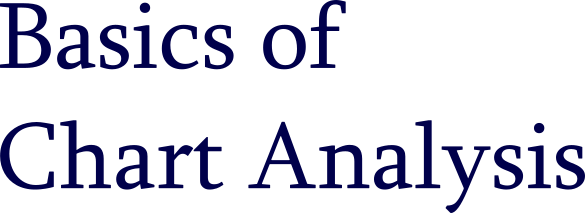
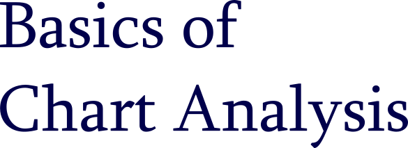

Dow Theory Principles
The Averages Discount Everything.
Every knowable factor that may possibly affect both demand and supply is reflected in the market price.The Market Has Three Trends.
According to Dow an uptrend is consistently rising peaks and troughs. And a downtrend is consistently rising lowering peaks and troughs. Dow believed that laws of action and reaction apply to the markets just as they do to the physical universe, meaning that each significant movement is followed by a certain pullback.
Dow considered a trend to have three parts:
- Primary (compared to tide, reaching further and further inland until the ultimate point is reached).
- Secondary (compared to waves and representing corrections in the primary trend, normally retracing between one-third and two-thirds of the previous trend movement and most frequently about half of the previous move)
- Minor (ripples) (fluctuations in the secondary trend).
Major Trends Have Three Phases.
Dow mainly paid attention to the primary (major) trends in which he distinguished three phases:
- Accumulation phase – the most astute investors are entering the market feeling the change in the current market direction.
- Public participation phase – a majority of technicians begin to join in as the price is rapidly advancing.
- Distribution phase – a new direction is now commonly recognized and well hiked; economic news are all confirming which all ends up in increasing speculative volume and wide public's participation.
The Averages Must Confirm Each Other.
Volume Must Confirm the Trend.
A Trend Is Assumed to Be Contiunous Until Definite Signals of Its Reversal.
Dow used to say that unless both Industrial and Rail Averages exceed a previous peak, there is no confirmation of inception or continuation of a bull market. Signals did no have to occur simultaneously, but the quicker one followed another – the stronger the confirmation was.
Volume increases or diminishes according to whether the price is moving in direction of a trend or in reverse. Dow considered volume a secondary indicator. His buy or sell signals were based on closing prices.
The overall technical approach in market analysis is based upon the idea that trends continue in motion until there is an external force causing it to change its direction - just like any other physical objects. And of course there are reversal signals to be looking for.